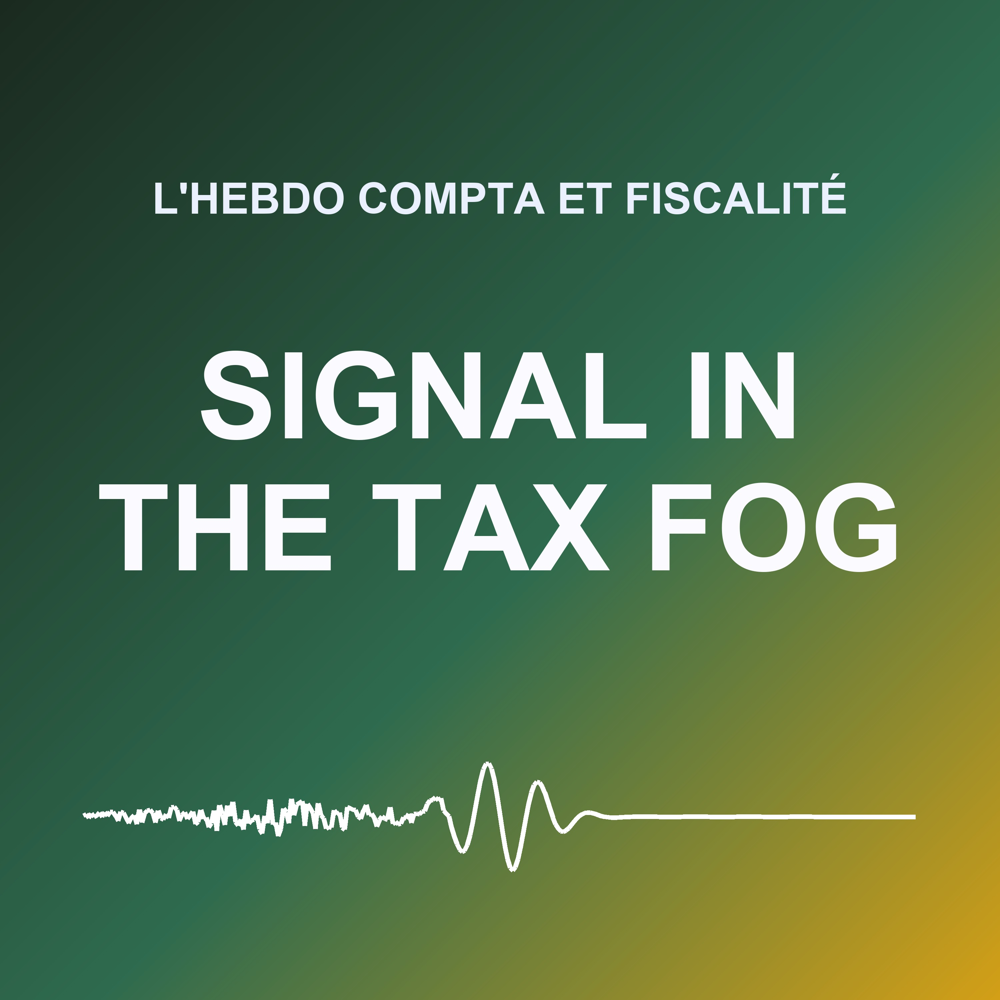
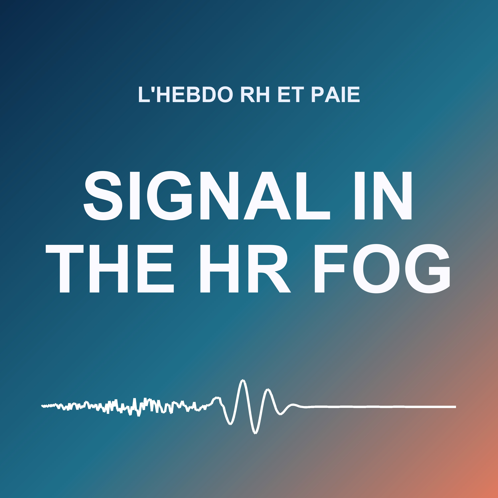

Pick a show
Every show made by this podcast engine: written by AI from the week's or the day's sources, read by AI voices.
Signal in the AI Fog
Every weekday morning, six minutes on enterprise AI in production: models and vendors, European sovereignty, LLMOps and MLOps platforms, evaluation, regulation and retail. Script written and voice generated by AI.
Latest episode: Walmart's Agent Gateway, Mistral's Compute · Thursday 22 October 2026
Open the catalog →
Signal Compta
Chaque semaine, dix minutes sur l'actualité comptable, fiscale et de l'audit : loi de finances et doctrine fiscale, normes comptables, facturation électronique, reporting de durabilité, commissariat aux comptes, et ce qui vient de l'Europe. Pour les experts-comptables, les directions financières et les commissaires aux comptes. Script écrit et voix générée par IA.
No episodes yet
Open the catalog →
Signal RH
Chaque semaine, dix minutes sur l'actualité RH, sociale et paie : droit du travail et jurisprudence, cotisations, conventions collectives, formation, outils RH et IA, et ce qui vient de l'Europe. Pour les responsables RH et les gestionnaires de paie. Script écrit et voix générée par IA.
No episodes yet
Open the catalog →